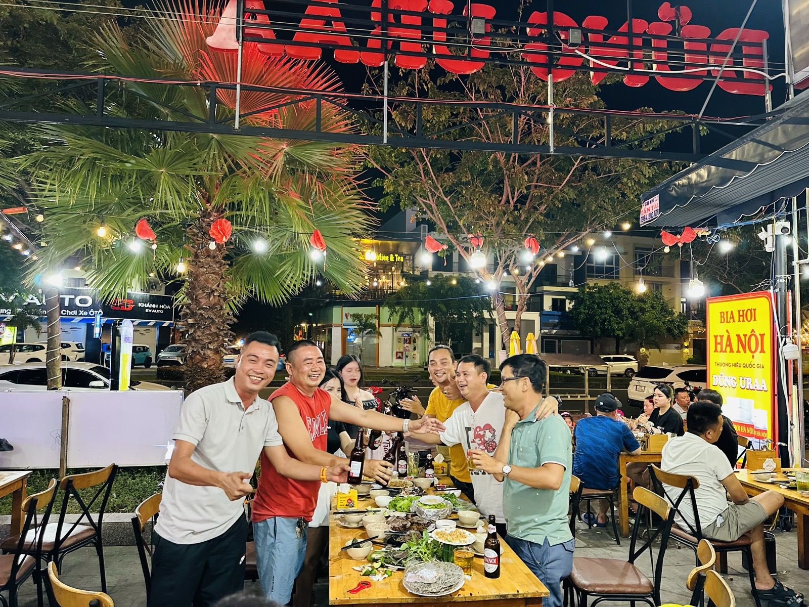

Người Bắc xa quê tìm vị quê ở đâu — chuyện khách quen của quán tôi
Quán tôi gần như không chạy quảng cáo. Mà tối nào cũng có khách. Ngồi tính lại, tôi thấy một con số vừa làm tôi mừng vừa làm tôi lo: 80–90% là khách quen.

Một tối bình thường ở quán. Phần lớn những người ngồi đây tôi biết mặt.
Mừng thì dễ hiểu. Còn lo thì tôi sẽ nói ở cuối bài — vì đó là điều thật lòng nhất tôi rút ra sau ba năm mở quán.
Người Bắc xa quê thật ra tìm gì?
Tôi từng nghĩ họ tìm món ăn. Mở quán rồi mới biết mình nghĩ chưa đủ.
Món ăn thì ở đâu cũng nấu được. Cái người ta tìm là một buổi tối quen thuộc: cốc bia hơi rót ra còn mát, đĩa lạc, đĩa đậu rán, cái bàn gỗ, tiếng chạm cốc, và người ngồi cạnh nói cùng giọng với mình.
Có bác vào quán, nghe tiếng nhân viên chào bằng giọng Bắc là cười. Có anh gọi món xong ngồi kể chuyện phố nhà mình ngoài kia giờ xây gì. Có nhóm cứ tối thứ Bảy là có mặt, không cần đặt bàn vì tôi để sẵn.
Họ không đến để ăn no. Họ đến để thấy quen.
Con số 80–90% ấy nói lên điều gì
Nó nói rằng người ta đã quay lại. Mà trong nghề ăn uống, khách quay lại là thước đo duy nhất đáng tin — chứ không phải lượt xem, lượt thích, hay một tối đông bất chợt.
Tôi hay nói với anh em trong quán: bán được một lần thì dễ, ai cũng làm được bằng khuyến mại. Nhưng để người ta quay lại lần thứ mười thì không có mẹo nào cả. Chỉ có lần nào cũng làm cho tử tế.
Một lần bất tín, vạn lần bất tin. Câu này đúng với bán nhà, và đúng y như thế với bán bia.
Khách quen là người soi mình kỹ nhất
Đây là điều nhiều người mở quán không lường trước: khách quen dễ tính hơn về chuyện chờ lâu, nhưng khó tính nhất về chuyện đổi vị.
Món hôm nay nêm ngọt hơn một chút là họ nhận ra ngay. Bia hôm nay không mát bằng hôm qua là họ nói luôn. Và họ nói thẳng vào mặt tôi, không nói sau lưng — vì họ coi đây là quán của mình.
Ban đầu tôi hơi chạnh lòng. Giờ tôi biết đó là món quà. Người ta chịu góp ý nghĩa là người ta còn muốn quay lại; người bỏ đi im lặng mới là người mình mất thật. Nên trong bếp nhà tôi có một luật: món nào lỡ nêm ngọt theo khẩu vị trong này là phải chỉnh lại.

Không chỉ khách quen — người làm cùng cũng ở lại lâu
Có một chuyện tôi ít kể. Từ ngày mở quán, hai vợ chồng tôi có một nguyên tắc tuyển người: ưu tiên những bạn khó xin việc ở nơi khác.
Không phải vì chúng tôi cao thượng gì. Đơn giản là chúng tôi nghĩ giúp được ai thì giúp, và lúc đó cũng chưa có nhiều tiền để giúp bằng cách khác — thì giúp bằng một chỗ làm.
Nhiều bạn sau này đủ lông đủ cánh rồi đi, tôi không giữ, đó là chuyện bình thường. Nhưng vẫn có ba bốn anh em gắn bó từ ngày đầu tới giờ. Khách quen vào quán, gặp lại đúng những gương mặt cũ — cái quen mà tôi nói ở đầu bài, một phần là từ đó mà ra.
Và đây là chỗ tôi lo
Nói thật: một quán sống bằng 80–90% khách quen là một quán chưa an toàn.
Nghe thì nghịch lý, nhưng đúng. Khách quen là vốn quý, song nó cũng nghĩa là tôi gần như không có nguồn khách mới đều đặn. Người quen thì có hạn: có người chuyển công tác, có người về quê, có người đổi thói quen. Mỗi năm tự nhiên vơi đi một ít, mà không có người mới bù vào thì đường đi xuống chỉ là chuyện thời gian.
Một anh làm chuỗi nhà hàng ngoài Hà Nội từng nói thẳng với tôi: đừng ngồi chờ khách quen giới thiệu, phải chủ động kéo khách mới về. Tôi nghe và biết anh nói đúng — đây là việc tôi đang phải làm, chứ chưa làm được tốt.
Nên nếu anh/chị đang mở quán và cũng đang mừng vì có nhiều khách quen như tôi, tôi chia sẻ thật: giữ khách quen là để sống được hôm nay; kiếm khách mới là để còn sống tiếp năm sau. Phải làm cả hai.
Còn với những anh chị người Bắc đang ở Nha Trang mà chưa biết quán — mời anh/chị ghé một tối. Ngồi xuống, gọi vại bia, rồi kể tôi nghe quê mình ở đâu. Ở đây chuyện đó là chuyện bình thường.
"Rồi, ngày mới tốt lành nhé."
Sống tử tế · Kiếm tiền hạnh phúc · Cho đi giá trị
Ghé quán một tối, tôi mời vại đầu tiên
Quán ở tầng một chung cư khu VCN Phước Long 2, đường số 28. Nhắn Zalo 0869 668 638 báo giờ và số người, tôi để bàn sẵn.
Đặt bàn qua Zalo